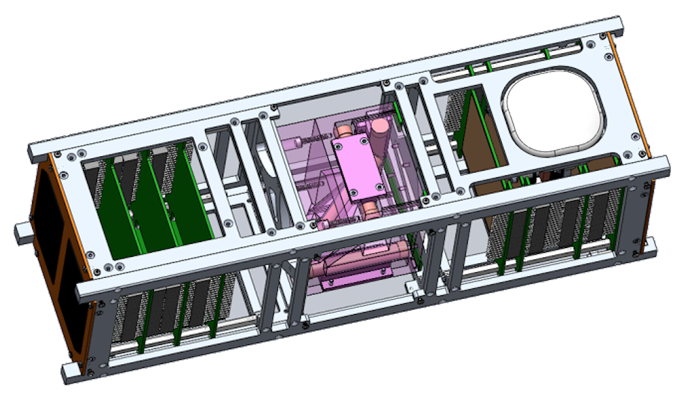

Building The Satellite Of The Future
Connect with the best minds of uWaterloo across a wide range of subsystem teams to share ideas and brainstorm new solutions to challenging problems.
Have software/hardware mentors talk about what worked (and what didn't) so you can gain experience fast.
Learn about the latest technologies that you can use to assist in building WatSat.